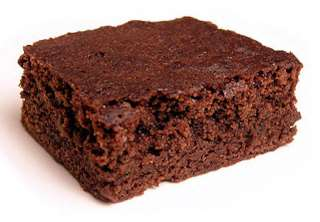

Burrito
Ingrediënten:
- 1 pak Santa Maria Original Soft Tortillas
- 1 zakje Santa Maria Burrito Seasoning Mix
- Santa Maria Taco Sauce Mild
- 400 g rundvlees, in reepjes
- 1 el boter of olie
- 1 paprika
- Guacemole
- Sla, in fijne reepjes
- Tomaten, in blokjes
- Geraspte kaas
bereidingswijzen:
- Verwarm de oven voor op 175 ºC. Vet de bakvorm in en bestrooi met de bloem. Bekleed de bodem met
bakpapier en vet in.
- Breek de chocolade in stukken. Zet een pan op laag vuur en laat de roomboter en chocolade smelten.
Roer regelmatig.
- Haal de pan van het vuur en roer de suiker, basterdsuiker en vanillesuiker door het chocolademengsel.
- Roer het bakmeel en zout door het chocolademengsel. Voeg de eieren al roerend 1 voor 1 toe.
- Schep het beslag in de vorm en strijk dit glad. Zet de ovenschaal in het midden van oven en bak de brownie in 30-35 min.
gaar.
- Wanneer de binnenkant van de brownie lekker smeuïg is, kan de brownie uit de oven gehaald worden.
Laat de brownie ca. 30 min. afkoelen.
- Snijd de zijkanten los, leg een rooster op de vorm, keer om en stort de brownie op het rooster.
Verwijder het bakpapier en laat de brownie verder afkoelen.
Snijd de brownie in 16-20 vierkanten.
